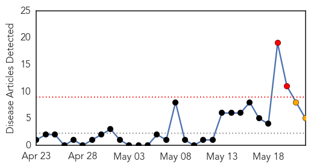
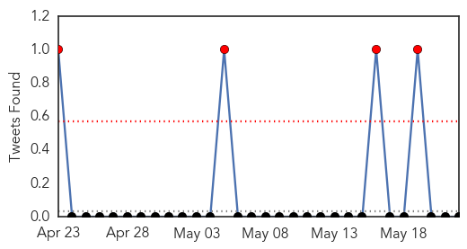
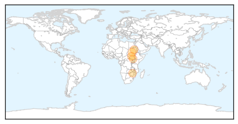

Influenza
30-Day Web Trend
0 alerts, 0 warnings

30-Day Twitter Trend
0 alerts, 0 warnings

Article Locations

Article Confidences

Top Articles:
Top Tweets:
-
No tweets found for May 22, 2014
Cholera
30-Day Web Trend
2 alerts, 2 warnings

30-Day Twitter Trend
2 alerts, 0 warnings

Article Locations
Article Confidences
Top Articles:
Top Tweets:
- 0.756
- RT: Cholera Cases Rise in Juba http://t.co/v0CSecc1qT | @RadioTamazuj most people drinking unboiled water from River Nile